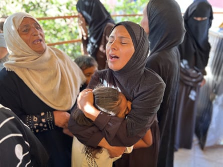

Progress towards a ceasefire in Gaza has been slow, officials in Qatar say, dashing hopes of a rapid end to hostilities in the devastated Palestinian territory.
The new round of indirect talks between Israel and Hamas began on Sunday, after both sides accepted a broad US-sponsored outline of a deal for an initial 60-day ceasefire that could lead to a permanent end to the 21-month conflict.
“I don’t think that I can give any timeline at the moment, but I can say right now that we will need time for this,” Majed al-Ansari, Qatar’s foreign ministry spokesperson, said on Tuesday, the third day of negotiations in Doha.
A Palestinian official familiar with the talks said “no breakthrough has been achieved so far”.
The admission that immediate agreement is unlikely may mean Donald Trump will not be able to announce a deal during this week’s visit to Washington by Benjamin Netanyahu, Israel’s prime minister, as Trump appeared to have hoped.
On Monday, Trump expressed confidence a deal could be reached soon, telling reporters “things are going along very well” and that Hamas “want to have that ceasefire”.
However, Ansari suggested the negotiations were still in relatively early stages. “What is happening right now is that both delegations are in Doha. We are speaking with them separately on a framework for the talks. So talks have not begun, as of yet, but we are talking to both sides over that framework,” he said.
In Gaza , the death toll continues to mount. Five Israeli military personnel were killed and 14 injured late on Monday in an attack by Hamas militants near Beit Hanoun in northern Gaza, the Israel Defense Forces (IDF) said, while Gaza’s civil defence agency reported 29 people killed in Israeli strikes across the territory, including three children.
Mahmoud Bassal, a spokesperson for the agency, said nine people had been killed in a drone strike on a camp for displaced people in southern Gaza.
Shaimaa al-Shaer, 30, who lives in the camp, said: “I was in front of my tent preparing breakfast for my four children – beans and a bit of dry bread. Suddenly, there was an explosion.”
Relatives of the Abu al-Khair family mourn their children at Nasser hospital, after they were killed by an Israeli drone that struck their tent.Photograph: Anas Deeb/UPI/Shutterstock
Health officials at the Nasser hospital, where victims of the Israeli strikes were taken, said one of the strikes had targeted tents sheltering displaced people in Khan Younis, in southern Gaza, killing four. A separate strike in the city killed another four people – a mother, father, and their two children, officials said.
In central Gaza, Israeli strikes hit a group of people, killing 10 and injuring 72, according to a statement by Awda hospital in Nuseirat.
The IDF accuses Hamas of using civilians as human shields, which Hamas denies.
Evacuation orders were issued by the IDF for more neighbourhoods of Khan Younis, displacing thousands of people before new Israeli attacks there.
The current ceasefire proposal envisages a phased release of 28 hostages, Israeli troop withdrawals from parts of Gaza the IDF has seized in recent months, an increase in humanitarian aid to the territory, and discussions on ending the war.
Hamas also want guarantees that Israel will not launch a new offensive after the 60-day truce. A previous ceasefire collapsed in March when Israel reneged on a promise to engage in negotiations that would have led to a second scheduled phase of the existing truce, and possibly a permanent cessation of hostilities.
Israel has said it will not agree to stop fighting until Hamas has released all the 50 hostages it still holds, of whom more than half are dead, and disarms.
Palestinian sources said earlier this week there were also gaps between the parties on the entry of humanitarian aid into Gaza and its distribution.
In contrast to Palestinian and Qatari officials, senior Israeli officials have highlighted progress in the talks.
Ze’ev Elkin, a member of Israel’s security cabinet, said there was “a substantial chance” a ceasefire would be agreed. “Hamas wants to change a few central matters; it’s not simple, but there is progress,” he told Israel’s public broadcaster Kan.
On Monday, Israel Katz, Israel’s defence minister, laid out plans to force all Palestinians in Gaza into a camp on the ruins of Rafah, a scheme legal experts and academics described as a blueprint for crimes against humanity .
Katz said he had ordered the IDF to prepare to set up a camp, which he called a “humanitarian city”, in Rafah. Israeli forces would control the perimeter of the site and initially “move” 600,000 Palestinians into the area – mostly people currently displaced in the Mawasi area.
Eventually, the entire population of Gaza would be housed there, and Israel aimed to implement “the emigration plan, which will happen”, Haaretz newspaper quoted Katz saying.
Gaza’s ministry of health has counted more than 57,000 killed by the Israeli offensive, mostly civilians. The UN and several western governments consider the tally to be reliable.
The offensive has plunged Gaza’s population into an acute humanitarian crisis, with many threatened by famine, and reduced much of the territory to rubble.
The war was triggered by a Hamas-led attack on southern Israeli in October 2023 in which militants killed 1,200, mostly civilians, and abducted 250.
AFP and Reuters contributed reporting